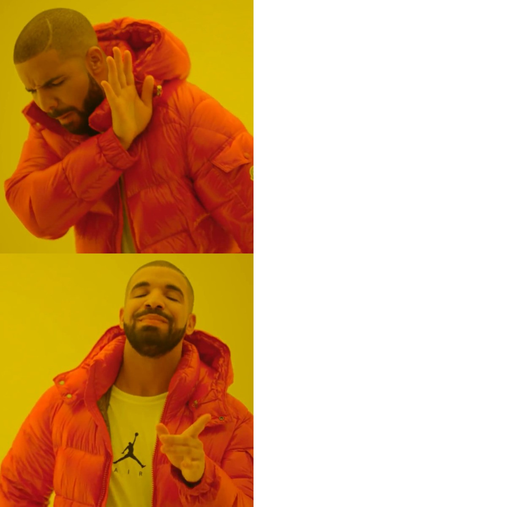
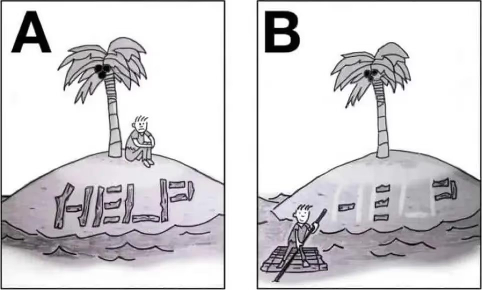
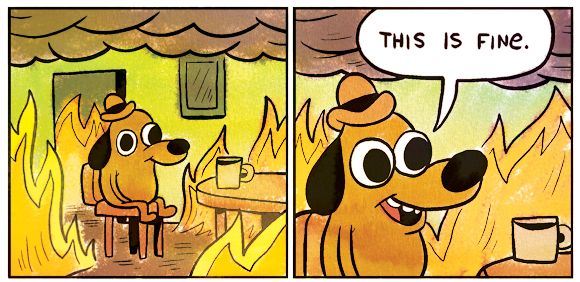
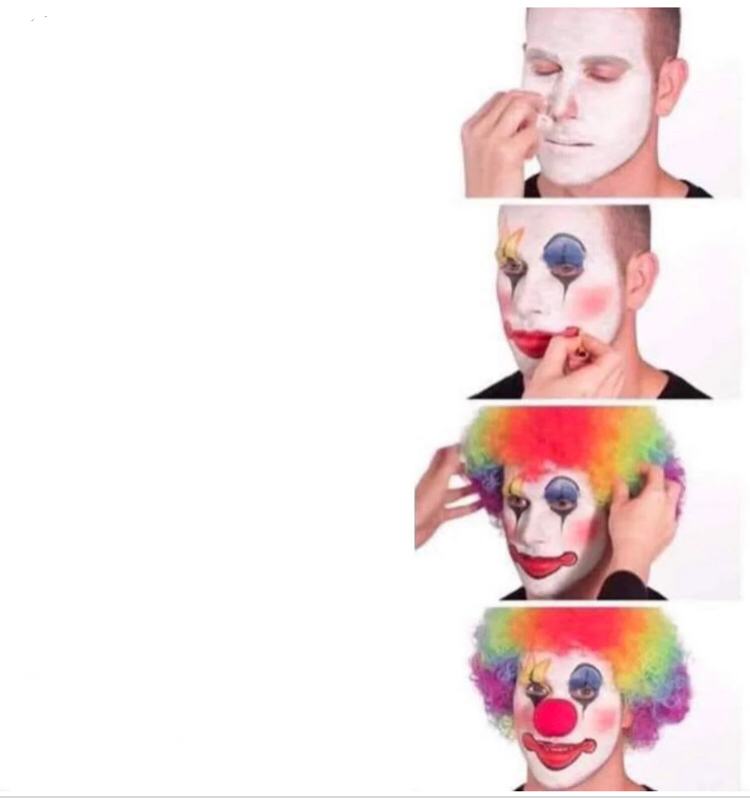
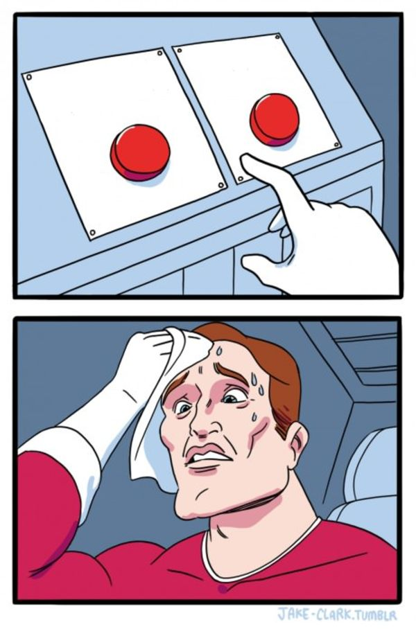

i'm not here to teach you business. i'm here to show you what the territory looks like so you don't walk in lost.
been playing this game since i was 15, im 21 now
sold 7+ products/services, 3-4 markets
work with and learn from 8-figure entrepreneurs
ive been running a holding company for the past 2 years
graduated from sishya in 2023, college dropout
in the next 60 minutes
quick reality check
a map
the levels of the game
the ways people die
some advice you didn't ask for
THE GAME
₹100
every few minutes i point at someone
you give me an example of whatever we just talked about
uncertainty is at an all time high
how do we move with this much fog of war?
nobody has seen this before.
the coastline is drawn in detail. the middle is blank.
if the map is blank, what do you actually own?
a route
a compass.
and legs that work on any terrain. that's the next 50 min.
entrepreneurship, stripped to the atom
create value for someone. capture some of it.
everything else is decoration.

a startup name, a logo, a pitch deck, a linkedin post about the journey
one thing. one person. who actually paid.
if you can bake bread people actually want, you eat.
recession, elections, ai, whatever. the skill is the asset, not the shop.
so how do you create value?
the specialist route is looking less and less certain.
"entrepreneur" is a multi-hyphenate job by definition. you are an amalgamation of a 100 different roles.
₹ ROUND
what kind of skills would an entrepreneur have to learn and master? answer not accepted without a clear why.
works in any industry, any economy, any decade.
INTERNAL
first principles · limiting beliefs · constant learning · high agency · truth seeking · nervous system
before you have a team, a product, or money, you have a brain and a body.
if those are broken, nothing downstream works.
high agency

same island. one writes HELP. one builds a raft.
first principles
everyone
a rocket costs $60M. that's just what rockets cost.
musk
what's it made of? aluminium, titanium, carbon fibre. ~2% of the price.
the other 98% is how we chose to build it.
EXECUTION
experimentation loop · decision making · sensemaking
where thinking becomes doing.
sensemaking
the world throws 1000 signals at you. most are noise.
a goalkeeper facing a penalty doesn't watch everything. they watch the hips.
experimentation loop
2010. two guys build an app. check in to places, tell friends what you're up to.
months of work. it barely grows.
one thing people keep doing anyway: posting photos.
you built all this. they only want one feature. what now?
they deleted everything else.
a user: "my photos aren't good enough." they add filters.
instagram.
sensemaking
school fest. you run a food stall. people stop, read the menu, leave.
your guess: too expensive.
what happens if you cut prices right now?
instead you listen. "we'll miss the next event." the queue is 15 minutes.
the problem was never the price. it was the wait.
test: one grab-and-go item, same price. if it sells, you were right.
DEMAND
aura · distribution · attention
a thing nobody knows about is identical to a thing that doesn't exist.
distribution
same ₹20 water bottle.
outside your house: nobody.
outside chepauk as the crowd walks out: gone in 10 minutes.
the product didn't change. the access to thirsty people did.
distribution
you're selling tickets to your school fest.
you post the link to your 200 followers.
or: one student in each nearby school drops it in their class group.
aura
the thing that makes people want to work with you before you've said anything.
sounds like a meme. it's real. it compounds.
aura
mrbeast texts 50 of the biggest youtubers: "one video, be here on this date."
they show up.
same idea, but tanmay bhat invites them. who shows up?
nobody read a pitch. the name was the pitch.
LEVERAGE
delegating · capital allocation · talent · systems
everything above this is you, alone. this is how one person becomes 10, 100, 1000.
money is a lever. people are a lever. a system that runs without you is the biggest lever.
capital allocation
every rupee and every hour is a bet.
the skill isn't having money. it's knowing where to put it.
₹ ROUND
you have $50M. buy a mega yacht, or put it into a brain-chip company.
which is the better play in this game? why?
exercise · pick two
you're launching a clothing brand for your school. pick any two:
a popular creator wears your clothes
a designer joins your team
test samples with 100 students before you produce
₹20,000 cash
shelf space in shops near 5 schools
a real founder coaches you weekly
internal · execution · demand · leverage
exercise · 3 months later
your first batch gets loads of attention.
almost nobody buys twice.
what do you look into first? would you change your two picks?
it's a game with levels.
and at every level, the game changes.
the skill that got you here is not the skill that beats the next boss.
LEVEL 1
alone. side hustle.
nobody cares. get one person to pay you anything.
LEVEL 2
first real customers
make it repeatable. prove it wasn't a fluke.
LEVEL 3
first hire
you can't do everything. your ability to explain is now the bottleneck.
LEVEL 4
a team
culture. communication. people problems.
LEVEL 5
capital + scale
allocation. every decision is a bet with real money.
LEVEL 6
it runs without you
letting go. YOU are the bottleneck now.
valorant caps at radiant. this doesn't cap.
you don't play to win. you play to keep playing.
you choose who you play with.
you choose what problems you play with.
you choose what you build.
the only requirements
know the prerequisites
understand the problem deeply
work from first principles
don't die to a failure mode
₹ ROUND
you and your best friend launch a clothing brand. you spend ₹30,000 on 100 t-shirts because everyone says the designs are fire.
a month later you've sold 8. six went to friends.
your partner barely replies anymore. you think the brand needs a better instagram page. you have ₹5,000 left.
what's going wrong? what do you do with the last ₹5,000?
if you just don't die, you're ahead of most people.
there are so many ways to die that survival IS the strategy.
but don't be scared of it. failing is the fastest way to learn. fail small and fast. not big and slow.
failure mode 1 · losing touch with reality

month 11. zero customers.
"it just needs one more feature"
you worked harder than anyone. the exam was a different subject.
the customer writes the syllabus. not you.
failure mode 2 · tilt

lose two rounds
blame the team
rush b alone
uninstall
founders do this too. the round just lasts 6 months and it's your money.
failure mode 3 · picking the wrong people

cofounder: my best friend
cofounder: the one who shows up at 2am
you've all done a group project.
now make it 5 years long and put your savings in it.
date before you marry. build something small together first.
also, quickly
running out of fuel. money, energy, or motivation. the idea wasn't bad, you just couldn't stay in long enough to find out.
building a vitamin, not a painkiller. nobody runs to the shop at 11pm for a vitamin.
> SAVE FILE FOUND
> LEVEL 5 · TEAM · CAPITAL · CUSTOMERS
> LOAD? [Y/N]
some of you are inheriting a level 5 game. that's a cheat code.
a cheat code is useless if you don't know how to play.
the business your parents built was built for a map that's now different. the terrain changed. the compass didn't.
time for some unsolicited advice.
quick check: who actually wants it?
i'd be doing you a disservice if i pretended the same advice works for all of you.
you're the only one qualified to decide what goes here.
don't blindly follow anyone. including me. including your parents. including whatever's trending.
follow the deepest, most authentic part of yourself.
it already knows what's right for you. this hour just gave it a vocabulary.
and the frame itself? you can change that too.
that's it.
m · map
₹100
→ next · ← back · n notes · i index · ? help
NOTES
INDEX · click to jump · i or esc to close · type a number + enter to jump from anywhere
→ / space / click next
← back
n speaker notes
m show / hide the map (any slide)
i index / quick jump
1-9 then enter jump to slide number
w bounty paid (reset to ₹100)
r nobody got it (rollover +₹100)
f fullscreen
home / end first / last
? this